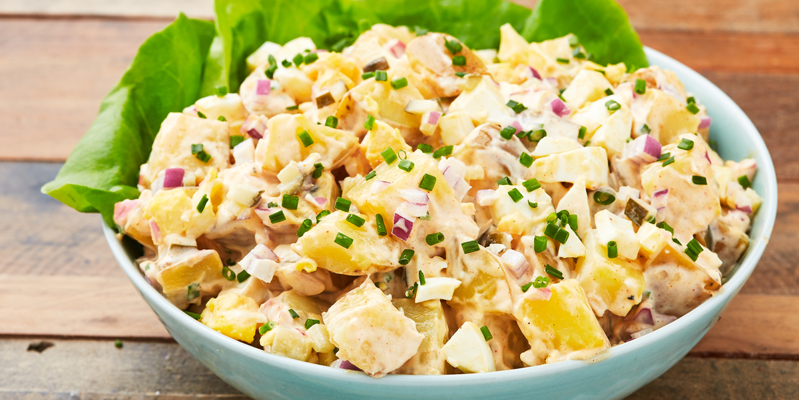

Potato Salad

Description
This is my mother's potato salad recipe. Every 4th of July she would make this potato salad for around 30 to 40 people. The recipe calls for ten pounds of potatoes. The sweet onions, dill pickles, and green and black olives give the recipe a wonderful flavor. Now it is always a must-do on the 4th of July
Ingredients
- 10 pounds potatoes, peeled
- 2 (6 ounce) cans black olives, diced
- 2 (6 ounce) jars green olives, diced
- 1 cup dill pickle chips, diced
- 1 cup sweet onion (such as Vidalia®), finely chopped
- 16 hard-cooked eggs, chopped
- ¼ cup prepared yellow mustard
- 7 cups Hellmanns® or Best Foods® Canola Cholesterol Free Mayonnaise
Steps
- Place potatoes into a large pot and cover with salted water; bring to a boil. (You may need two pots.) Reduce heat to medium-low and simmer until fork-tender, about 1 to 1 1/2 hours. Start checking for doneness after 1 hour. Drain and rinse the potatoes with cold running water.
- Place black olives, green olives, pickle chips, onion, and hard-cooked eggs into a large heavy-duty disposable foil pan. When the potatoes are cool, chop them into small pieces and gently mix them with the olive-egg mixture.
- Combine mayonnaise and yellow mustard together. Add the dressing to the salad ingredients and mix well. Chill for at least 2 hours before serving.